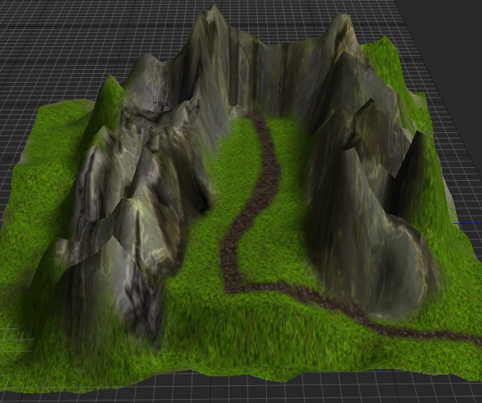

HeightMapTool
The HeightMapTool is a tool used to create a HeightMap object and manipulate patches created on it. It has five sub-tools the user can use to create and destroy, raise and lower, smooth and sharpen, flatten, and paint patches on a HeightMap object.
Common Uses
- Creating large, three-dimensional environmental geometry
Using the HeightMapTool
There are two ways to access the HeightMapTool:
- Select
HeightMapToolfrom theSelectTooldrop-down list in the Tools Window- Or, press ‘7’, the hotkey for bringing up the HeightMapTool
When the HeightMapTool is opened and there is no previous HeightMap object, a message will appear on the screen informing the user that there is no HeightMap object, as can be seen here:
To make a new HeightMap object, simply click anywhere on the text that has appeared on the Level window. An object named HeightMap should now appear in the Objects Window.
Now that there is a HeightMap object, the user may start adding patches to it by using the CreateDestroy sub-tool of HeightMapTool. Patches are the segments of the HeightMap that can be altered through the HeightMapTool.
CreateDestroy
The CreateDestroy sub-tool is used to create and destroy patches that make up the height map. The size of the patch is created is dictated by the UnitsPerPatch property of the HeightMap object. Please see the HeightMap Manual Page for more information on this important property.
There are four properties in the CreateDestroyTool window that define certain parameters of the patches created:
BaseHeight:Real- A Real that defines the height at which the map will be created
UsePerlinNoise:Boolean- A boolean that when sets to true allows the user to create patches with different levels of noise, defined by the following two properties:
PerlinFrequencyandPerlinAmplitude
- A boolean that when sets to true allows the user to create patches with different levels of noise, defined by the following two properties:
PerlinFrequency:Real- A Real that defines the frequency of “bumps” to be added to the patch (e.g., a higher number makes for a bumpier patch)
PerlinAmplitude:Real- A Real that defines the height of the “bumps” created (e.g., a higher number makes for higher bumps)
To create a new patch, the user simply clicks wherever in the Level Window where they would like the patch to be placed. To destroy a patch, Shift+Click on the patch to be destroyed.
Here is a picture of four patches made with the default values of the properties of CreateDestroyTool:
Here is a picture where the upper-right patch has been made with PerlinFrequency set to 10 and PerlinAmplitude set to 12:
RaiseLower
The RaiseLower sub-tool is used to increase and decrease points on the height map patches. There are four properties in the RaiseLowerTool window that define the range and strength of the area to be raised or lowered:
Radius:Real- A Real that defines the size of the area (in the shape of a circle) to be raised or lowered according to the value set in the property
Strength.
- A Real that defines the size of the area (in the shape of a circle) to be raised or lowered according to the value set in the property
FeatherRadius:Real- A Real that defines a circle outside the one created by the Radius property, where the value of the property
Strengthlinearly interpolates down from 100% (where it meets the inner circle) to 0% (at its own outer limit).
- A Real that defines a circle outside the one created by the Radius property, where the value of the property
Strength:Real- A Real that defines the strength by which a part of the height map (see Radius and FeatherRadius) is raised or lowered.
Relative:Boolean- This property is not currently functional.
To raise an area on a patch of the height map, simply left-click on the area to be raised. One can either make multiple clicks or keep the left-mouse button held while moving the mouse around to continue to raise parts of the patch. To lower an area on a patch, hold Shift while clicking (or holding the left-mouse button).
The following animation shows part of a height map being raised using the RaiseLowerTool:

This animation shows the same part of the height map being lowered using the RaiseLowerTool:

Note
A number of sub-tools in the HeightMapTool have both the Radius and FeatherRadius properties. These two properties work together with the Strength property to determine the values by which the height map is being changed. While the descriptions of these properties in the property lists of the sub-tools is accurate, a diagram is provided to make clear how the value changes from the circle defined by Radius and the circle defined by FeatherRadius:
SmoothSharpen
The SmoothSharpen sub-tool is used to either smooth or sharpen bumps on the height map. There are seven properties in the SmoothSharpenTool window that define the range, strength, and sampling used to smooth and sharpen the map:
Radius:Real- A Real that defines the size of the area (in the shape of a circle) to be smoothed or sharpened according to the value set in the property
Strength.
- A Real that defines the size of the area (in the shape of a circle) to be smoothed or sharpened according to the value set in the property
FeatherRadius:Real- A Real that defines the area outside the area defined by
Radius, where the value of the propertyStrengthlinearly interpolates down from 100% (where it meets the inner circle) to 0% (at its own outer limit).
- A Real that defines the area outside the area defined by
Strength:Real- A Real that defines the strength by which a part of the height map (see Radius and FeatherRadius) is smoothed or sharpened.
Warning
Deprecated Properties While the following properties will affect the behavior of the SmoothSharpen tool, it is highly recommended that the user leaves them at their default values as they will be removed in a later build.
UniformSamples:IntegerRandomSamples:IntegerRandomSampleDistance:IntegerAutoDetermineSamples:Boolean
To smoothen an area on the height map, simply left-click on the area to be smoothed. One can either make multiple clicks or keep the left-mouse button held while moving the mouse around to continue smoothing parts of the patch. To sharpen an area on a patch, hold Shift while clicking (or holding the left-mouse button).
The following screenshot shows two patches; the one on the left has been smoothed, while the one on the right has been sharpened:
Flatten
The flatten sub-tool is used to to flatten an area of a patch to a certain height. By default, this height will be sampled on the first mouse-click when using the sub-tool. This allows the user to pick an area on the height map with the desired height and then flatten the surroudings to match that height. To flatten based on a specific height instead of a sample, simply uncheck the SampleOnMouseDown property. The properties of the Flatten tool are as follows:
Radius:Real- A Real that defines the size of the area (in the shape of a circle) to be flattened according to a sample or the value set in the property
Height.
- A Real that defines the size of the area (in the shape of a circle) to be flattened according to a sample or the value set in the property
FeatherRadius:Real- A Real that defines the area outside the area defined by
Radius, where the value of the propertyHeightlinearly interpolates down from 100% (where it meets the inner circle) to 0% (at its own outer limit).
- A Real that defines the area outside the area defined by
Height:Real- A Real that defines the specific height to which one wishes to flatten a given part of the height map (set this value if not sampling from the mouse-click)
SampleOnMouseDown:Boolean- A Boolean that when checked, samples the height to which the map will be flattened. If unchecked, specify the height in the
Heightproperty.
- A Boolean that when checked, samples the height to which the map will be flattened. If unchecked, specify the height in the
Warning
Deprecated Properties The following properties are not currently functional and should not be changed from their default settings:
SlopeNormal:Real3SampleNormal:Boolean
To flatten an area on the height map, one must first decide whether to sample a height from a surrounding point on the height map or to set the value directly in the Height property. Once a method has been chosen, simply left-click (or hold the left-mouse button) on the area to be flattened. The following screenshot shows a flattened “valley” amidst raised peaks on a height map:
WeightPainter
The WeightPainter sub-tool is used to paint textures onto a height map. In order to use the WeightPainter sub-tool, one must first make a Material that has the WeightedTextures material block on it, as seen here:
Both the WeightedTextures material block and the WeightPainter sub-tool only support four separate textures. The user must load each texture into the WeightedTextures material block, as seen here:
Once this new Material has been applied to the HeightMap object, one may use the WeightPainter sub-tool to select each texture separately and paint the height map with it. The Index property on the WeightPainter sub-tool gives the user access to each of the four Textures. The following screenshots show a height map–the one created in the Flatten section above–being painted one Texture at a time:
The height map is covered with the grass texture (Index : Texture 0):
A dirt road traversing the grassy plain is added (Index : Texture 1):
The first mountain texture is added to the cliffs surrounding the valley (Index : Texture 2):

The second mountain texture is used to fill in the rest of the mountainous area (Index : Texture 3):